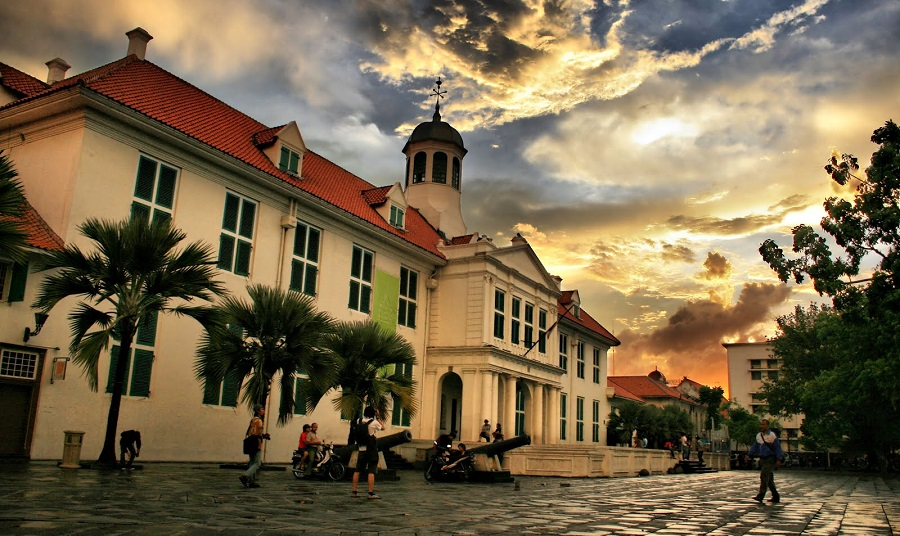

Jakarta Tourist Spots
Taman Mini Indonesia Indah (TMII)

Taman Mini Indonesia Indah is a theme park that showcases the cultural diversity in Indonesia. You can find every single Indonesian culture in this place, including the houses, arts, music, and many more. Why spend a lot of money to go around Indonesia when you can just visit TMII.
Fatahillah Museum
Fatahillah Museum is historical museum located in Kota Tua. Before a Museum, this building was once a City Hall of Batavia (now Jakarta). The museum showcases artifacts, documents, art pieces and diorama. Even the architecture itself contains a rich historical value from the colonial era. This museum is a must go place if you're more interested to the history of Jakarta.
Pantai Indah Kapuk (PIK)
Pantai Indah Kapuk (PIK) is a waterfront area located in North Jakarta. PIK is known for it's modern lifestyle and a variety of recreational places. The favorite spot for tourists is the White Beach. It offers a beatiful view and some delicious culinary delights. Pantai Indah Kapuk is the perfect spot for those who wants a lively atmosphere while still experiencing Jakarta's coastal charm.